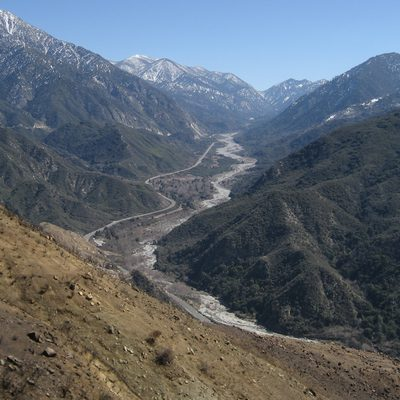
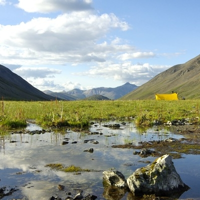
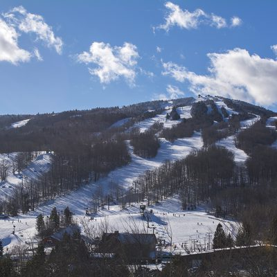
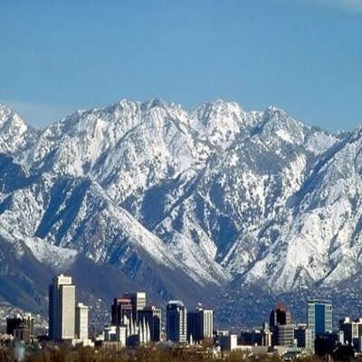
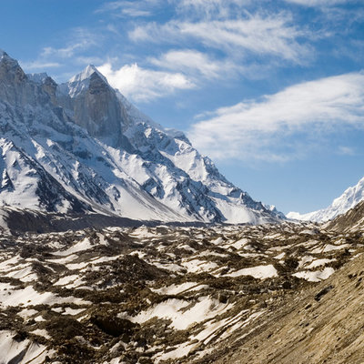
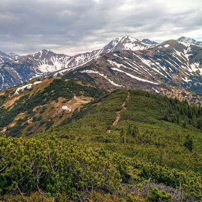

Matterhorn
O Matterhorn ou Monte Cervino é talvez a montanha mais conhecida dos Alpes.

Monte Denali
Denali, também conhecido pelo seu nome oficial antigo Monte McKinley.

Monte Everest
Monte Everest, também conhecido no Nepal como Sagarmāthā e no Tibete como Chomolungma.

Dolomitas
As Dolomitas formam uma cadeia montanhosa dos Alpes orientais no norte da Itália.

Monte Branco
O Monte Branco é a mais alta montanha dos Alpes e da União Europeia.

Monte Washington
O Monte Washington, com 1917 metros de altitude no topo, é uma montanha.

Kilimanjaro
Monte Kilimanjaro ou monte Quilimanjaro, localizado nas coordenadas 3º07' S e 37º35'.